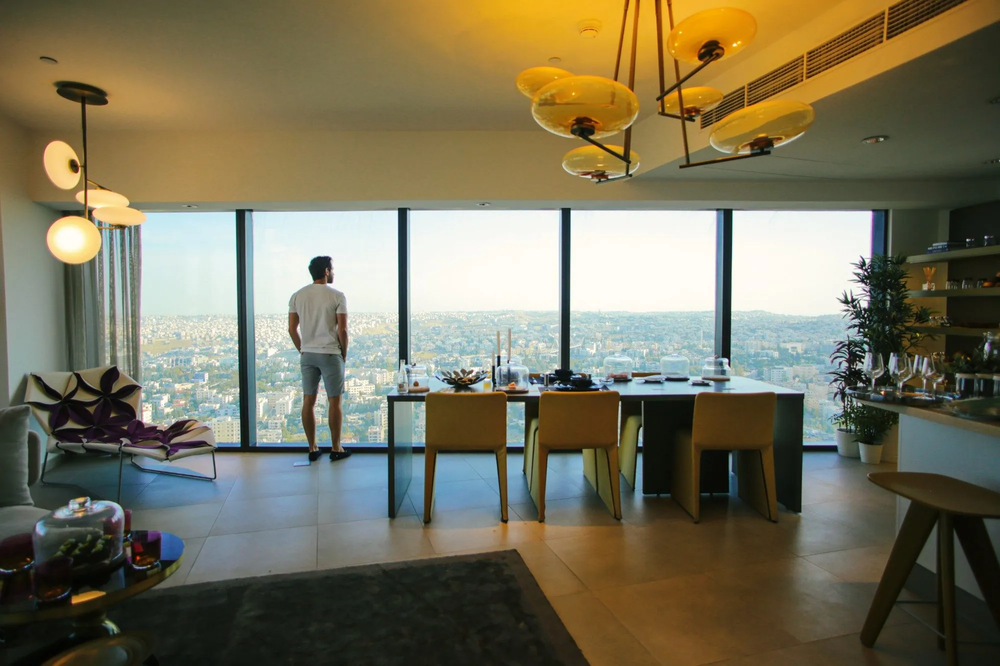
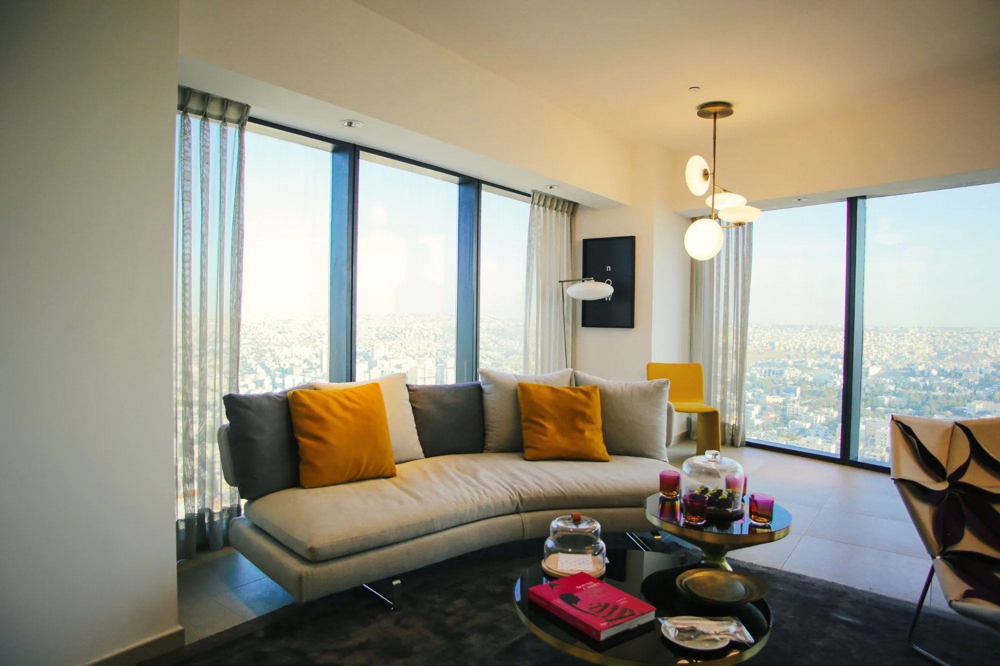
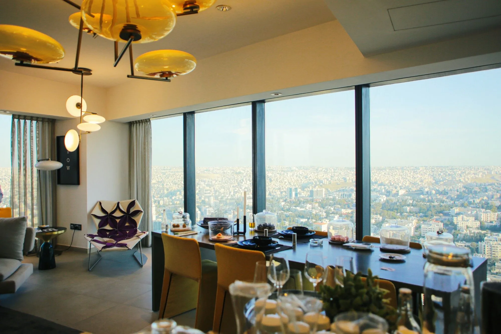

Amman, Jordan — Branded Residences · Serviced by W Amman
The Skyline Residences
The project
A View of Prestige, A Life of Refinement
High above the city, the residences are defined by the view they frame. For Eagle Hills, we photographed the interiors and the skyline as one composition, so the life inside and the city beyond read as a single experience: warm light, curated furniture and Amman stretching to the horizon.




Next projectRoyal L'Azure ResortTabuk, Saudi Arabia